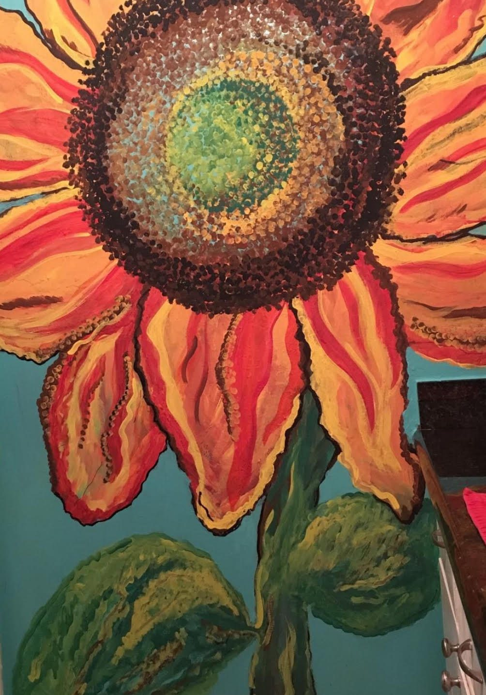
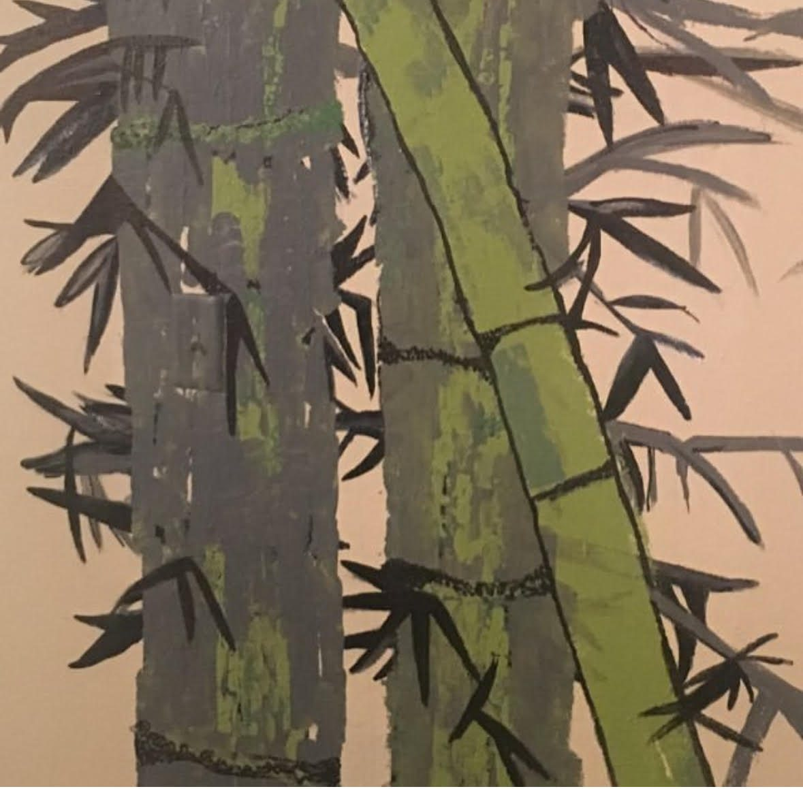

Walls That Come Alive
Stephanie's murals bring her texture-forward style to a bigger canvas — your wall. Based in Rohnert Park and serving Sonoma County, she paints bold subjects, layered color, and compositions sized to homes, businesses, nurseries, and special spaces.


Have a wall in mind?
Murals are commissioned per project — tell Stephanie about your space, the mood you want, and roughly how big the wall is, and she'll take it from there.
Commission a Mural